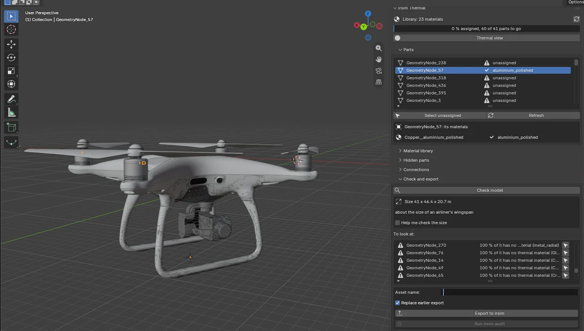

Import the model as usual: File ▸ Import (FBX, glTF/GLB, OBJ or USD). Press N in the 3D viewport, pick the irsim tab and click Load library.

The tab has a bar showing how much of the model is done, the Thermal view switch, and five sections:
- Parts: every mesh object in the scene, each with its thermal status.
- Material library: every material irsim knows, with its numbers.
- Hidden parts: the parts the model lacks, such as an engine or a battery.
- Connections: which parts touch, and which face each other across a gap.
- Check and export: what is left to do, and the button that hands the model to irsim.
Parts are objects#
irsim treats every object as a part, and the part's name is how a scene refers to it later (prim: battery). Downloaded models are often grouped by look rather than by function: one object holds all the white plastic, and another holds the four propellers together. Use Blender as you normally would:
- Separate (
Pin Edit Mode) to split a propeller away from the arm. - Join (
Ctrl J) to merge pieces that are really one part. - Rename (
F2) to what the part really is:battery,propeller_front_left,motor_rear.
The model in the picture shows why renaming matters: the Sketchfab conversion called every one of its 41 parts GeometryNode_<number>. The checklist flags names like that, and Blender's own Cube.003.
You can do this before or after assigning materials. Assignments follow the faces, so joining, separating, extruding or duplicating keeps every face's material.